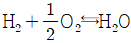
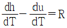
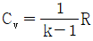
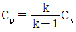
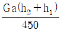
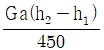
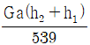
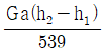

에너지관리산업기사 (2014-09-20 기출문제)
1과목: 열역학 및 연소관리
1. 다음 중 사이클 상태변화 과정이 틀린 것은?
- 오토 사이클 : 단열압축→등적가열→단열팽창→등적방열
- 디젤 사이클 : 단열압축→등압가열→단열팽창→등적방열
- 샤바테 사이클 : 단열압축→등압가열→등적가열→단열팽창
- 브레이톤 사이클 : 단열압축→등압가열→단열팽창→등압방열
(정답률: 81%)

2. 카르노사이클로 작동되는 효율 28%인 기관이 고온체에서 100kJ의 열을 받아들일 때, 방출열량은 몇 kJ인가?
- 17
- 28
- 44
- 72
(정답률: 56%)
3. 전기식 집진장치의 특징 설명으로 틀린 것은?
- 집진효율이 90~99.5% 정도로 높다.
- 고전압장치 및 정전설비가 필요하다.
- 미세입자 처리도 가능하다.
- 압력손실이 크다.
(정답률: 89%)
4. 냉매가 갖추어야 하는 조건으로 거리가 먼 것은?
- 증발잠열이 작아야 한다.
- 임계온도가 높아야 한다.
- 화학적으로 안정되어야 한다.
- 증발온도에서 압력이 대기압보다 높아야 한다.
(정답률: 70%)
5. 보일러 절탄기 등에서 발생할 수 있는 저온부식의 원인이 되는 물질은?
- 질소 가스
- 아황산 가스
- 바나듐
- 수소 가스
(정답률: 89%)
6. 다음 중 가장 높은 온도는?
- 20℃
- 295K
- 530°R
- 68°F
(정답률: 80%)
7. 어떤 가역 열기관이 400℃에서 1000kJ을 흡수하여 일을 생산하고 100℃에서 열을 방출한다. 이 과정에서 전체 엔트로피 변화는 약 몇 kJ/K인가?
- 0
- 2.5
- 3.3
- 4
(정답률: 62%)
8. 비열 1.3kJ/kgㆍ℃, 온도 30℃인 어떤 물질 10kg을 온도 520℃까지 가열하는데 필요한 열량(kcal)은? (단, 가열 과정에서 물질의 상(相) 변화는 없다.)
- 5147
- 6370
- 4490
- 4900
(정답률: 71%)
9. 다음 연료 중 단위 중량당 발열량이 가장 큰 것은?
- C
- H2
- CO
- S
(정답률: 72%)
10. 1Sm3의 메탄(CH4)가스를 공기와 같이 연소시킬 경우 이론 공기량(Sm3)은?
- 2.52
- 4.52
- 7.52
- 9.52
(정답률: 60%)
11. 공기 중에서 수소의 연소반응식이

일 때 건연소가스량(Sm3/Sm3)은?- 1.88
- 2.38
- 2.88
- 3.33
(정답률: 41%)
12. 27℃에서 12L의 체적을 갖는 이상기체가 일정 압력에서 127℃까지 온도가 상승하였을 때 체적은 얼마인가?
- 12L
- 16L
- 27L
- 56.4L
(정답률: 70%)
13. 다음 연소장치 중 연소부하율이 가장 높은 것은?
- 마플로
- 가스터빈
- 중유 연소 보일러
- 미분탄 연소 보일러
(정답률: 77%)
14. 보일러의 부속장치 중 원심력을 이용한 집진장치는?
- 루버식 집진장치
- 코로나식 집진장치
- 사이클론식 집진자치
- 백 필터식 집진장치
(정답률: 94%)
15. 이상기체의 성질에 대한 표현으로 틀린 것은?
- h=u+RT



(정답률: 61%)
16. 일반 기체상수의 단위를 바르게 나타낸 것은?
- kJ/K
- kJ/kg
- kJ/kmol
- kJ/kmolㆍK
(정답률: 78%)
17. 탄소(C) 1kg을 완전 연소시킬 때 생성되는 CO2의 양은 약 얼마인가?
- 1.67kg
- 2.67kg
- 3.67kg
- 6.34kg
(정답률: 64%)
18. 보일러 연소가스 폭발의 가장 큰 원인은?
- 중유가 불완전 연소할 때
- 저수위로 보일러를 운전할 때
- 증기의 압력이 지나치게 높을 때
- 연소실 내에 미연가스가 차 있을 때
(정답률: 82%)
19. 물 1kmol이 100℃, 1기압에서 증발할 때 엔트로피 변화는 몇 kJ/K인가? (단, 물의 기화열은 2257kJ/kg이다.)
- 22.57
- 100
- 109
- 139
(정답률: 68%)
20. 이상기체의 특성이 아닌 것은?
- dU=CvdT식을 만족한다.
- 비열은 온도만의 함수이다.
- 엔탈피는 압력만의 함수이다.
- 이상기체상태방정식을 만족한다.
(정답률: 75%)
2과목: 계측 및 에너지진단
21. 열전대 온도계의 원리로 맞는 것은?
- 전기적으로 온도를 측정한다.
- 두 물체의 열기전력을 이용한다.
- 히스테리시스의 원리를 이용한다.
- 물체의 열전도율이 큰 것을 이용한다.
(정답률: 81%)
22. 배가스 중 산소농도를 검출하여 적정 공연비를 제어하는 방식을 무엇이라 하는가?
- O2 Trimmimg 제어
- 배가스량 제어
- 배가스 온도 제어
- CO 제어
(정답률: 89%)
23. 압력의 차원을 절대단위계로 바르게 나타낸 것은?
- MLT-2
- ML-1T-1
- ML-1T-2
- ML-2T-2
(정답률: 74%)
24. 비접촉식 온도계에 해당하는 것은?
- 유리 온도계
- 저항 온도계
- 안력 온도계
- 광고 온도계
(정답률: 88%)
25. 연료가 보유하고 있는 열량으로부터 실제 유효하게 이용된 열량과 각종 손실에 의한 열량 등을 조사하여 열량의 출입을 계산한 것은?
- 열정산
- 보일러효율
- 전열면부하
- 상당증발량
(정답률: 82%)
26. 오차의 종류로서 계통오차에 해당되지 않는 것은?
- 고유오차
- 개인오차
- 우연오차
- 이론오차
(정답률: 71%)
27. 다음 유량계 중 용적식 유량계가 아닌 것은?
- 오벌식 유량계
- 로터미터
- 루츠식 유량계
- 로터리 피스톤식 유량계
(정답률: 75%)
28. 보일러의 자동제어와 관련된 약호가 틀린 것은?
- FWC : 급수제어
- ACC : 자동연소제어
- ABC : 보일러 자동제어
- STC : 증기압력제어
(정답률: 88%)
29. 증기보일러의 상당 증발량(Ge)에 대한 표기로 옳은 것은? (단, 실제증발량 : Ga, 발생증기엔탈피 : h2, 급수엔탈피 : h1이다.)




(정답률: 83%)
30. 보일러의 열정산을 하는 목적이 아닌 것은?
- 열의 분포 상태를 알 수 있다.
- 보일러 조업 방법을 개선하는데 이용할 수 있다.
- 노의 개축, 축로의 자료로 이용할 수 있다.
- 시험부하는 원칙적으로 정격부하로 한다.
(정답률: 74%)
31. 오르자트(orsat)법에 의한 가스분석법에서 가스성분에 따른 흡수제의 연결이 바르게 된 것은?
- CH4 : 가성소다 수용액
- CO : 알칼리성 피로카롤 용액
- CO2 : 30% 수산화칼륨 수용액
- O2 : 암모니아성 염화제1구리 용액
(정답률: 75%)
32. 원리 및 구조가 간단하고, 고온, 고압에도 사용할 수 있으므로 공업적으로 가장 많이 사용되는 액면 측정 방식은?
- 부자식
- 기포식
- 차압식
- 음향식
(정답률: 76%)
33. 잔류 편차를 남기기 때문에 단독으로 사용하지 않고 다른 동작과 결합시켜 사용되는 것은?
- D 동작
- P 동작
- I 동작
- PI 동작
(정답률: 81%)
34. 스테판-볼츠만의 법칙에서 완전 흑체표면에서의 복사열 전달열과 절대온도의 관계로 옳은 것은?
- 절대온도에 비례한다.
- 절대온도의 제곱에 비례한다.
- 절대온도의 3제곱에 비례한다.
- 절대온도의 4제곱에 비례한다.
(정답률: 70%)
35. 액면계의 측정방법에 대한 설명으로 틀린 것은?
- 직접 측정 방법으로 직관식이 있다.
- 직접 측정 방법으로 다이어프램식이 있다.
- 간접 측정 방법으로 초음파식이 있다.
- 간접 측정 방법으로 방사선식이 있다.
(정답률: 78%)
36. 저항식 습도계에 대한 설명이 바르게 된 것은?
- 직류전압에 의한 저항치를 측정하여 비교습도를 표시
- 직류전압에 의한 저항치를 측정하여 상대습도를 표시
- 교류전압에 의한 저항치를 측정하여 비교습도를 표시
- 교류전압에 의한 저항치를 측정하여 상대습도를 표시
(정답률: 63%)
37. 증기 방생을 위해 쓰인 열량과 보일러에 공급된 열량(입열량)과의 비를 무엇이라고 하는가?
- 전열면 열부하
- 보일러 효율
- 증발계수
- 전열면의 증발율
(정답률: 70%)
38. 보일러 열정산시 입열 항목에 해당되지 않는 것은?
- 방산에 의한 손실열
- 연료의 연소열
- 연료의 현열
- 공기의 현열
(정답률: 83%)
39. 오리피스 유량계의 교축기구 바로 직전과 직후에 차압을 추출하는 방식의 탭으로서 정압분포가 편중되어도 환상실에 의하여 평균된 차압을 추출할 수 있는 것은?
- 베나탭
- 코너탭
- 니플탭
- 플랜지탭
(정답률: 72%)
40. 어떠한 조건이 충족되지 않으면 다음 동작을 저지하는 제어방법은?
- 인터록제어
- 피드백제어
- 자동연소제어
- 시퀀스제어
(정답률: 86%)
3과목: 열설비구조 및 시공
41. 검사대상기기의 설치자의 변경신고 사항으로 옳은 것은?
- 기존설치자가 15일 이내에 신고
- 기존설치자가 30일 이내에 신고
- 새로운 설치자가 15일 이내에 신고
- 새로운 설치자가 30일 이내에 신고
(정답률: 70%)
42. 20℃ 상온에서 재료의 열전도율(kcal/mh℃)이 큰 순서대로 나열된 것으로 옳은 것은?
- 구리-알루미늄-철-물-고무
- 구리-알루미늄-철-고무-물
- 알루미늄-구리-철-물-고무
- 알루미늄-철-구리-고무-물
(정답률: 82%)
43. 유리용융용 탱크가마의 구성요소 중 브릿지 벽(Bridge Wall)의 역할은?
- 2차 공기를 취입한다.
- 청진(淸塵)된 유리액을 내보낸다.
- 연소가스(gas)가 조업부로 넘어가는 것을 막아준다.
- 미청진(美淸塵) 유리액이 조업부로 넘어가는 것을 막아준다.
(정답률: 71%)
44. 동관의 경납 용접 시의 특징을 설명한 것으로 틀린 것은?
- 용접온도는 200~300℃ 정도이다.
- 용접재는 인동납이나 은납이 사용된다.
- 연납 용접보다 이음부의 강도가 높다.
- 연납 용접보다 사용압력이 높은 곳에 적용한다.
(정답률: 73%)
45. 태양에너지이용 기술재료 중 에너지 교환재료가 아닌 것은?
- 집열재료
- 열매(熱媒)재료
- 반사재료
- 투과재료
(정답률: 76%)
46. LD 전로법을 평로법에 비교한 것으로 틀린 것은?
- 평로법보다 생산 능률이 높다.
- 평로법보다 공장 건설비가 싸다.
- 평로법보다 작업비, 관리비가 싸다.
- 평로법보다 고철의 배합량이 많다.
(정답률: 81%)
47. 열전도율이 0.8kcal/mㆍhㆍ℃인 콘크리트벽의 안쪽과 바깥쪽의 온도가 각각 25℃와 20℃이다. 벽의 두께가 5cm일 때 1m2당 매시간 전달되어 나가는 열량은 약 몇 kcal인가?
- 0.8
- 8
- 80
- 800
(정답률: 69%)
48. 보일러 보급수 펌프의 양수량이 500ℓ/min, 양정 100m, 펌프효율 45%, 안전율 5%일 때 펌프의 축동력(kW)은 약 얼마인가?
- 19.0
- 20.9
- 22.7
- 25.1
(정답률: 33%)
49. 보일러에 진동이 있거나 충격이 가하여져도 안전하게 작동하는 안전밸브는?
- 추식 안전밸브
- 레버식 안전밸브
- 지레식 안전밸브
- 스프링식 안전밸브
(정답률: 90%)
50. 검사대상기기인 보일러의 계속사용검사 중 운전성능검사의 유효기간은?
- 6개월
- 1년
- 2년
- 3년
(정답률: 83%)
51. 가열로의 내벽온도를 1200℃, 외벽온도를 200℃로 유지하고 매시간당 1m2에 대한 열손실을 400kcal로 설계할 때 필요한 노벽의 두께(cm)는 약 얼마인가? (단, 노벽 재료의 열전도율은 0.1kcal/mㆍhㆍ℃이다.)
- 10
- 15
- 20
- 25
(정답률: 59%)
52. 내화재의 스폴링(Spailing)에 대한 설명 중 맞는 것은?
- 온도의 급격한 변화로 인하여 균열이 생기는 현상
- 내화재료의 자기 변태점
- 내화재료 표면에 헤어 크랙(hair crack)이 생기는 현상
- 어떤 면을 경계로 하여 대칭이 되는 것
(정답률: 81%)
53. 내열범위가 -260~260℃ 정도이고 탄성이 부족하고 기름에 침해되지 않는 패킹제는?
- 오일 실 패킹
- 합성수지 패킹
- 네오프렌
- 석면 조인트 시트
(정답률: 73%)
54. 에너지이용 합리화법에서의 검사대상기기 계속사용검사에 관한 내용으로 틀린 것은?
- 계속사용검사신청서는 유효기간 만료 10일전까지 제출하여야 한다.
- 유효기간 만료일이 9월 1일 이후인 경우에는 5개월 이내에서 계속사용검사를 연기할 수 있다.
- 검사대상기기 검사연기신청서는 공단이사장에게 제출하여야 한다.
- 계속사용검사신청서에는 해당 검사기기의 설치검사증 사본을 첨부하여야 한다.
(정답률: 85%)
55. 검사대상기기조종자의 선임기준에 관한 설명으로 틀린 것은?
- 1구역마다 1인 이상 선임하여야 한다.
- 에너지관리기사 자격증 소지자는 모든 검사대상기기 조종자로 선임될 수 있다.
- 압력용기의 경우 한 시야로 볼 수 있는 범위마다 2인 이상의 조종자를 선임하여야 한다.
- 중앙통제ㆍ조종설비를 갖춘 경우는 1인이 통제ㆍ조종할 수 있는 범위마다 1인 이상을 선임하여야 한다.
(정답률: 73%)
56. 보온재 중 무기질의 보온재가 아닌 것은?
- 석면
- 탄산마그네슘
- 규조토
- 펠트
(정답률: 79%)
57. 급수처리에 연관되는 설명으로 틀린 것은?
- 보일러수는 연수보다는 경수가 좋다.
- 수질이 불량하면 각종 용기나 배관계에 관석이 발생한다.
- 수질이 불량하면 보일러 수명과 열효율에 영향을 줄 수 있다.
- 관류보일러는 반드시 급수처리를 하여 수질이 좋아야 한다.
(정답률: 82%)
58. 다음 오일버너 중 유량 조절범위가 가장 큰 것은?
- 유압식
- 회전식
- 저압기류식
- 고압기류식
(정답률: 82%)
59. 다음 중 관류보일러에 해당되는 것은?
- 슐처 보일러
- 레플러 보일러
- 열매체 보일러
- 슈미드-하트만 보일러
(정답률: 86%)
60. 스코피(scotch)보일러에서 화실 천장판의 강도보강에 사용되는 스테이(stay)의 종류는?
- 볼트 스테이(bolt stay)
- 튜브 스테이(tube stay)
- 거셋 스테이(gusset stay)
- 가이드 스테이(guide stay)
(정답률: 73%)
4과목: 열설비취급 및 안전관리
61. 보일러가 과열되는 경우와 가장 거리가 먼 것은?
- 보일러수가 농축되었을 때
- 보일러수의 순환이 빠를 때
- 보일러의 수위가 너무 저하되었을 때
- 전열면에 관석(scale)이 부착되었을 때
(정답률: 69%)
62. 다음 증기난방법 중에서 응축수 환수법이 아닌 것은?
- 중력환수식
- 건식환수관식
- 기계환수식
- 진공환수식
(정답률: 77%)
63. 화학 세관에서 사용하는 유기산에 해당되지 않는 것은?
- 인산
- 초산
- 구연산
- 포름알테히드
(정답률: 73%)
64. 산업재해 발생의 원인으로 볼 수 없는 것은?
- 과실
- 숙련부족
- 장기근속
- 신체적인 결함
(정답률: 85%)
65. 제3자로부터 위탁을 받아 에너지사용시설의 에너지절약을 위한 관리ㆍ용역과 에너지절약형 시설투자에 관한 사업을 하는 기업은?
- 에너지관리공단
- 수요관리전문기관
- 에너지절약전문기업
- 에너지관리진단기업
(정답률: 83%)
66. 보일러를 건조보존 방법으로 보존할 때의 설명으로 틀린 것은?
- 모든 뚜껑, 밸브, 콕 등은 전부 개방하여 둔다.
- 습기를 제거하기 위하여 생석회를 보일러 안에 둔다.
- 연도는 습기가 없게 항상 건조한 상태가 되도록 한다.
- 보일러 수를 전부 빼고 스케일 제거 후 보일러 내에 열풍을 통과시켜 완전 건조 시킨다.
(정답률: 86%)
67. 보일러 급수에 포함되는 불순물 중 경질 스케일을 만드는 물질은?
- 황산칼슘(CaSO4)
- 탄산칼슘(CaCO3)
- 탄산마그네슘(MgCO3)
- 수산화칼슘(Ca(OH)2)
(정답률: 68%)
68. 에너지이용 합리화법에 의한 검사대상기기의 검사에 관한 설명으로 틀린 것은?
- 검사대상기기를 개조하는 경우에는 시ㆍ도지사의 검사를 받아야 한다.
- 검사대상기기는 유효기간 만료일 전에 검사신청을 하여야 한다.
- 검사대상기기의 설치장소를 변경한 경우에는 시ㆍ도지사의 검사를 받아야 한다.
- 검사대상기기를 설치하는 경우에는 설치계획을 산업통상자원부장관의 검사를 받아야 한다.
(정답률: 60%)
69. 보일러를 사용하지 않고 장기간 보존할 경우 가장 적합한 보존법은?
- 만수 보존법
- 건조 보존법
- 밀폐 만수 보존법
- 청관제 만수 보존법
(정답률: 89%)
70. 증기사용 중 유의사항에 해당되지 않는 것은?
- 수면계 수위가 항상 상용수위가 되도록 한다.
- 과잉공기를 많게 하여 완전연소가 되도록 한다.
- 배기가스 온도가 갑자기 올라가는지를 확인한다.
- 일정압력을 유지할 수 있도록 연소량을 가감한다.
(정답률: 84%)
71. 보일러 내 스케일(scale) 부착 방지대책으로 잘못된 것은?
- 청관제를 적절히 사용한다.
- 습수 처리된 용수를 사용한다.
- 관수 분출 작업을 적절히 행한다.
- 응축수를 보일러 급수로 재사용치 않는다.
(정답률: 68%)
72. 실외와 접촉하는 북향의 벽체의 면적이 40m2이고, 실외 온도는 -10℃, 실내온도는 24℃일 때, 난방부하는 약 몇 kcal/h인가? (단, 방위계수는 1.15, 열관류율은 0.47kcal/m2h℃이다.)
- 628.1
- 735.1
- 745.4
- 828.3
(정답률: 65%)
73. 에너지이용 합리화법상 국내외 에너지사정의 변동으로 에너지수급에 중대한 차질이 발생하거나 발생할 우려가 있다고 인정될 경우, 에너지수급의 안정을 위한 조치 사항에 해당 되지 않는 것은?
- 에너지의 배급
- 에너지의 비축과 저장
- 에너지 판매시설의 확충
- 에너지사용기자재의 사용 제한
(정답률: 87%)
74. 에너지사요의 제한 또는 금지에 관한 조정ㆍ명령, 그 밖에 필요한 조치를 위반한 자에 대한 벌칙은?
- 3백만원 이하의 벌금
- 1천만원 이하의 벌금
- 3백만원 이하의 과태료
- 1천만원 이하의 과태료
(정답률: 53%)
75. 연간 에너지 사용량이 대통령령으로 정하는 기준량 이상이면 누구에게 신고하여야 하는가?
- 시ㆍ도지사
- 산업통장자원부장관
- 한국난방시공협회장
- 에너지관리공단이사장
(정답률: 58%)
76. 포밍과 프라이밍이 발생했을 때 나타나는 현상이 아닌 것은?
- 캐리오버 현상이 발생한다.
- 수격작용이 발생할 수 있다.
- 수면계의 수위 확인이 곤란하다.
- 수위가 급히 올라가고 고수위 사고의 위험이 있다.
(정답률: 67%)
77. 증기난방의 응축수 환수방법 중 증기의 순환이 가장 빠른 것은?
- 기계환수식
- 진공환수식
- 단관식 중력환수식
- 복관식 중력환수식
(정답률: 90%)
78. 보일러를 점화하기 전에 역화와 폭발을 방지하기 위하여 다음 중 가장 먼저 취해야 할 조치는?
- 포스트퍼지를 실시한다.
- 화력의 상승속도를 빠르게 한다.
- 댐퍼를 열고 체류가스를 배출시킨다.
- 연료의 점화가 빨리 그리고 신속하게 전파되도록 한다.
(정답률: 81%)
79. 연료의 연소 시 고온부식의 주된 원인이 되는 성분은?
- 황
- 질소
- 탄소
- 바나듐
(정답률: 82%)
80. 보일러 내에 스케일이 다량으로 생성되었을 때의 장해에 해당되지 않는 것은?
- 연료손실이 크고 효율이 나빠진다.
- 수관이 과열되고 팽출과 파열이 발생할 수 있다.
- 국부적인 과열이 발생하고 전열효율이 나빠진다.
- 보일러 연소가스의 통풍저항이 증가한다.
(정답률: 77%)
샤바테 사이클은 가역 열기계 사이클 중 하나로, 열기계의 효율을 높이기 위해 등적가열과 등적방열을 분리하여 진행하는 사이클이다. 즉, 열을 받아 일정한 압력을 유지하면서 가열하는 등압가열 단계와, 일정한 엔트로피를 유지하면서 가열하는 등적가열 단계를 따로 진행하고, 이후 단열팽창 단계와 등압방열 단계를 거쳐 초기 상태로 돌아오는 사이클이다.
따라서, 샤바테 사이클은 등압가열→등적가열→단열팽창→등압방열이 아닌 등압가열→등적가열→단열팽창→등적방열이다.